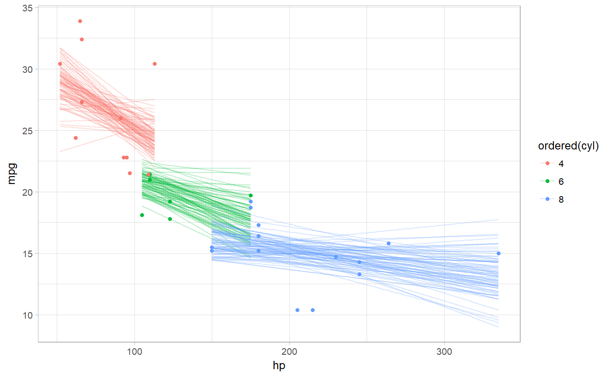
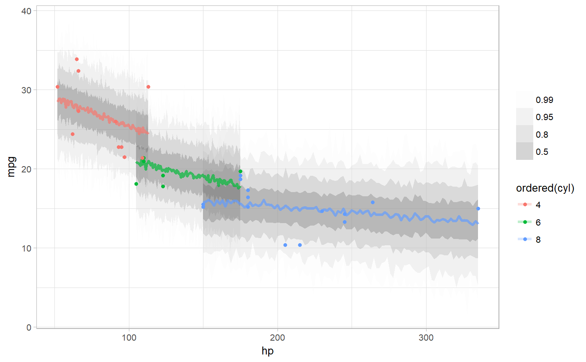

Given a data frame and a model, adds samples from the posterior fit (aka the linear/link-level predictor) or the posterior predictions of the model to the data frame in a long format.
add_predicted_samples(newdata, model, var = "pred", ..., n = NULL, re_formula = NULL) add_fitted_samples(newdata, model, var = "estimate", ..., n = NULL, re_formula = NULL, category = "category", auxpars = TRUE, scale = c("response", "linear")) predicted_samples(model, newdata, var = "pred", ..., n = NULL, re_formula = NULL) fitted_samples(model, newdata, var = "estimate", ..., n = NULL, re_formula = NULL, category = "category", auxpars = TRUE, scale = c("response", "linear")) # S3 method for default predicted_samples(model, newdata, ...) # S3 method for default fitted_samples(model, newdata, ...) # S3 method for stanreg predicted_samples(model, newdata, var = "pred", ..., n = NULL, re_formula = NULL) # S3 method for stanreg fitted_samples(model, newdata, var = "estimate", ..., n = NULL, re_formula = NULL, category = "category", auxpars = TRUE, scale = c("response", "linear")) # S3 method for brmsfit predicted_samples(model, newdata, var = "pred", ..., n = NULL, re_formula = NULL) # S3 method for brmsfit fitted_samples(model, newdata, var = "estimate", ..., n = NULL, re_formula = NULL, category = "category", auxpars = TRUE, scale = c("response", "linear"))
| newdata | Data frame to generate predictions from. If omitted, most model types will generate predictions from the data used to fit the model. |
|---|---|
| model | A supported Bayesian model fit / MCMC object that can provide fits and predictions. Supported models
are listed in the second section of |
| var | The name of the output column for the predictions (default |
| ... | Additional arguments passed to the underlying prediction method for the type of model given. |
| n | The number of samples per prediction / fit to return. |
| re_formula | formula containing group-level effects to be considered in the prediction.
If |
| category | For some ordinal and multinomial models (notably, |
| auxpars | For |
| scale | Either |
A data frame (actually, a tibble) with a .row column (a
factor grouping rows from the input newdata), .chain column (the chain
each sample came from, or NA if the model does not provide chain information),
.iteration column (the iteration the sample came from), and .pred column (a
sample from the posterior predictive distribution). For convenience, the resulting data
frame comes grouped by the original input rows.
add_fitted_samples adds samples from the posterior linear predictor (or the "link") to
the data. It corresponds to posterior_linpred in rstanarm or
fitted.brmsfit in brms.
add_predicted_samples adds samples from the posterior prediction to
the data. It corresponds to posterior_predict in rstanarm or
predict.brmsfit in brms.
add_fitted_samples and fitted_samples are alternate spellings of the
same function with opposite order of the first two arguments to facilitate use in data
processing pipelines that start either with a data frame or a model. Similarly,
add_predicted_samples and predicted_samples are alternate spellings.
Given equal choice between the two, add_fitted_samples and add_predicted_samples
are the preferred spellings.
library(ggplot2) library(dplyr) library(rstanarm) library(modelr) theme_set(theme_light()) m_mpg = stan_glm(mpg ~ hp * cyl, data = mtcars, # 1 chain / few iterations just so example runs quickly # do not use in practice chains = 1, iter = 500)#> #> SAMPLING FOR MODEL 'continuous' NOW (CHAIN 1). #> #> Gradient evaluation took 0 seconds #> 1000 transitions using 10 leapfrog steps per transition would take 0 seconds. #> Adjust your expectations accordingly! #> #> #> Iteration: 1 / 500 [ 0%] (Warmup) #> Iteration: 50 / 500 [ 10%] (Warmup) #> Iteration: 100 / 500 [ 20%] (Warmup) #> Iteration: 150 / 500 [ 30%] (Warmup) #> Iteration: 200 / 500 [ 40%] (Warmup) #> Iteration: 250 / 500 [ 50%] (Warmup) #> Iteration: 251 / 500 [ 50%] (Sampling) #> Iteration: 300 / 500 [ 60%] (Sampling) #> Iteration: 350 / 500 [ 70%] (Sampling) #> Iteration: 400 / 500 [ 80%] (Sampling) #> Iteration: 450 / 500 [ 90%] (Sampling) #> Iteration: 500 / 500 [100%] (Sampling) #> #> Elapsed Time: 0.114 seconds (Warm-up) #> 0.083 seconds (Sampling) #> 0.197 seconds (Total) #># sample 100 fit lines from the posterior and overplot them mtcars %>% group_by(cyl) %>% data_grid(hp = seq_range(hp, n = 101)) %>% add_fitted_samples(m_mpg, n = 100) %>% ggplot(aes(x = hp, y = mpg, color = ordered(cyl))) + geom_line(aes(y = estimate, group = paste(cyl, .iteration)), alpha = 0.25) + geom_point(data = mtcars)# plot posterior predictive intervals mtcars %>% group_by(cyl) %>% data_grid(hp = seq_range(hp, n = 101)) %>% add_predicted_samples(m_mpg) %>% ggplot(aes(x = hp, y = mpg, color = ordered(cyl))) + stat_lineribbon(aes(y = pred), .prob = c(.99, .95, .8, .5), alpha = 0.25) + geom_point(data = mtcars) + scale_fill_brewer(palette = "Greys")